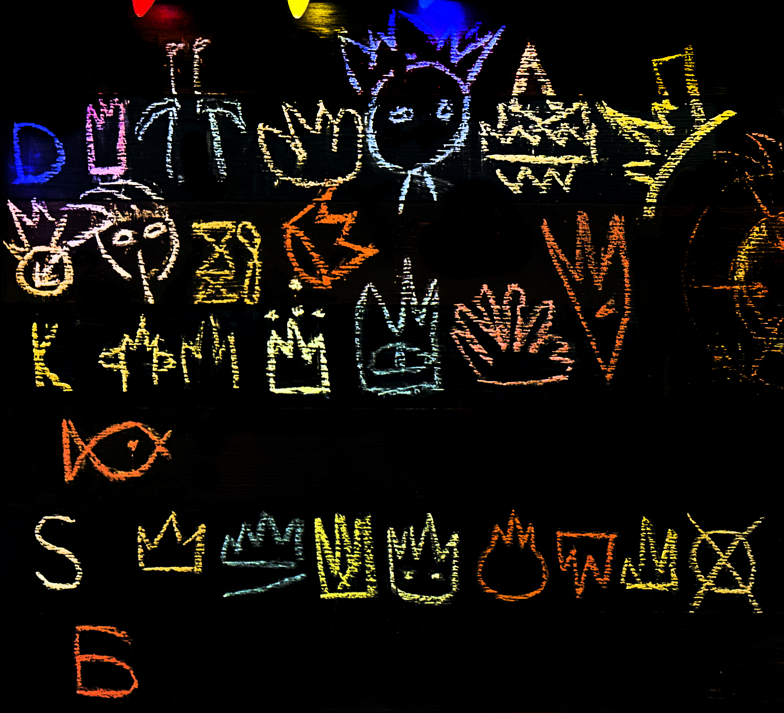
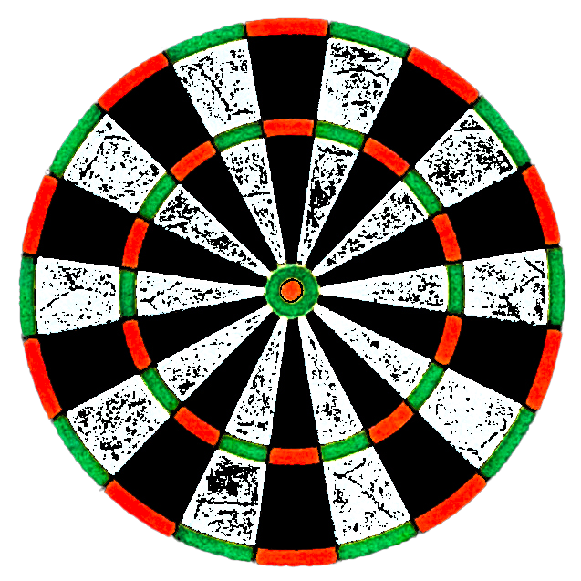

What's going on here?! 🎯
Upload a picture of your dartboard, and the app will automatically detect and
track dart positions using advanced image processing with OpenCV, YOLO and clustering methods.
If you click on the TEST button, a random image from the test library will be uploaded.
SWIPE RIGHT TO SEE UNPROCESSED IMAGE
May be little slow, due to low-end the CPU on the server and iterative clustering,
but soon it will become much faster. (locally takes around 2sec on regular computer)
You can check the full app on my Github.
Additional feautures like automatic Airdrop for Apple users, game logic and other functionalities are there.
Scroll down for more details!


Hold on, image is processing
Oops, something went wrong